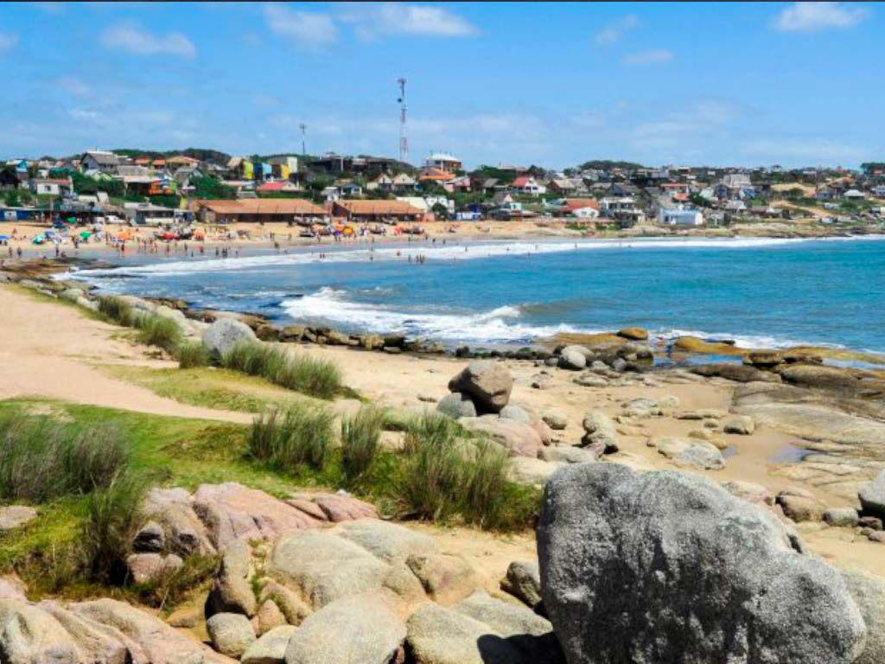
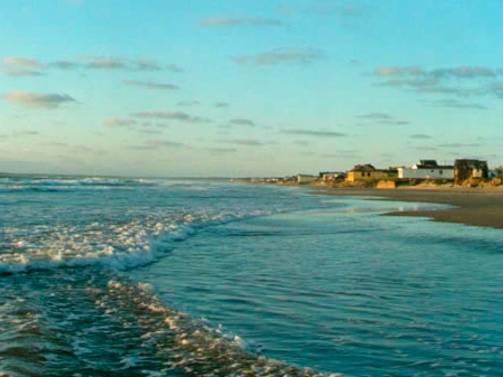

¿Por donde te gustaria comenzar?
Punta del Diablo
Punta del Diablo es una pequeña localidad pesquera . La Playa de los Pescadores en el centro está llena de botes pesqueros. . Cerca están los puestos que venden artesanías y la playa Rivero, conocida por su fuerte oleaje. La playa Grande de arena y con curvas bordea sus bosques de eucaliptos y pinos.
Cabo Polonio
Cabo Polonio es forma parte del parque nacional. Se encuentra a escasa distancia del balneario Valizas, y tiene tres pequeñas islas frente a su costa conocidas como islas de Torres. En las mismas se encuentra una importante reserva de lobos marinos, los cuales pueden ser vistos desde la costa o desde el Faro de Cabo Polonio

La Paloma
La Paloma es una ciudad de la costa sureste de Uruguay, al este de Montevideo. El faro blanco y delgado de Cabo Santa María mira desde lo alto al Atlántico. Cerca están la Bahía Chica y la Bahía Grande. Al oeste se encuentra la playa Los Botes, con un fuerte oleaje y la Laguna de Rocha.

Aguas Dulces
Veraneantes castillenses deseosos de “costa, viento y marea” llegaron a principios del siglo XX en carretas “a toda marcha, contra bañados y médanos”. Plantaron sus ranchos de paja contra el mar y sobre la arena, más adelante los construirían sobre el mar por medio de pilotes…“Aguas Dulces” brotaban por sus cachimbas.
